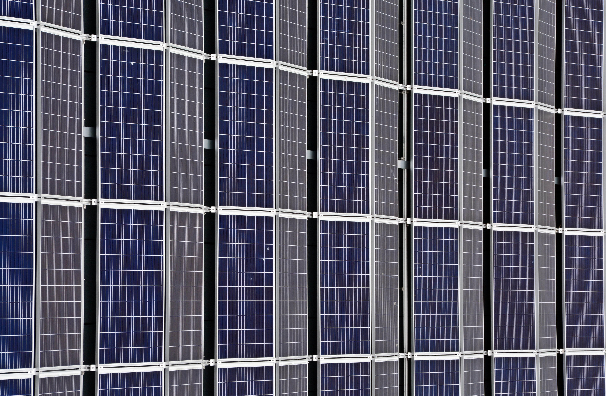
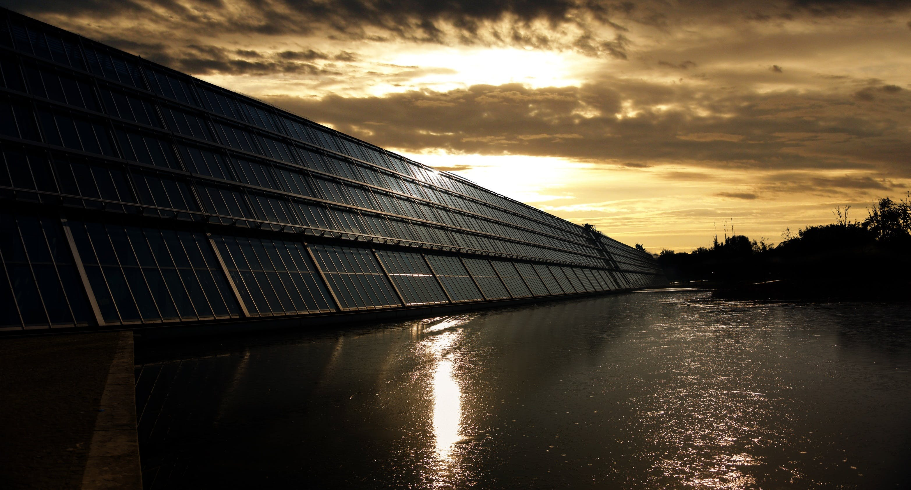
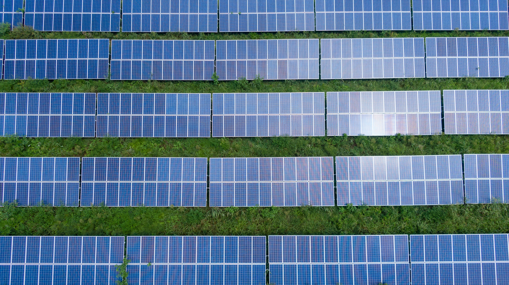
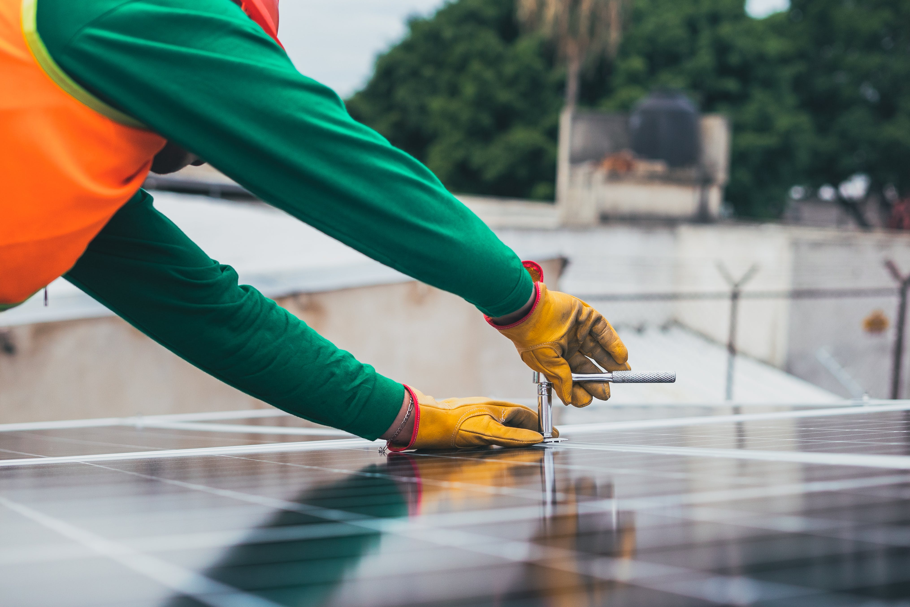
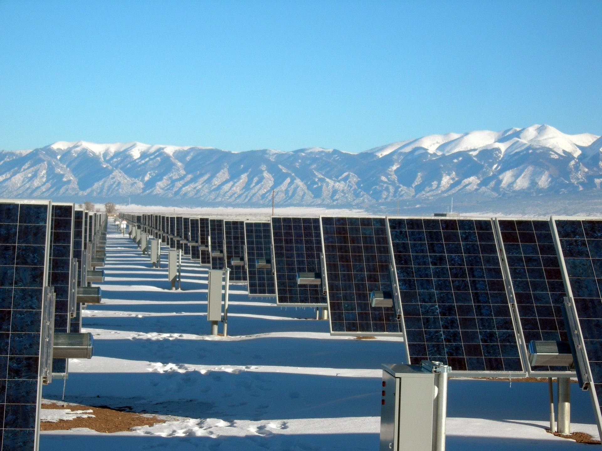

Energia solară este deja captată în multe părți ale lumii și are potențialul de a furniza de câteva ori consumul global de energie curent dacă este exploatată corespunzător. Energia solară poate fi folosită direct pentru a produce electricitate sau pentru încălzire și chiar pentru răcire. Potențialul viitor al acesteia este limitat doar de disponibilitatea noastră de a profita de ocazie.